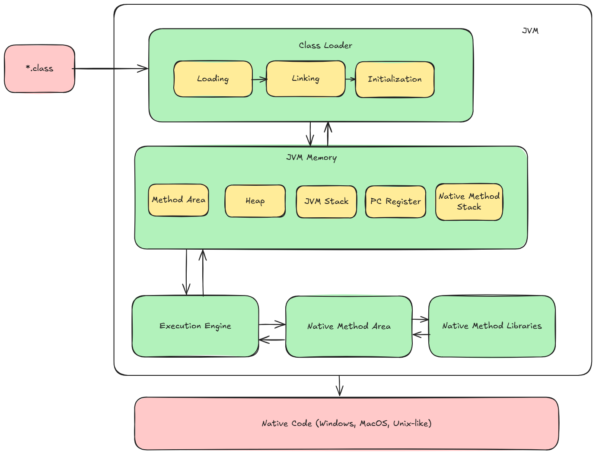
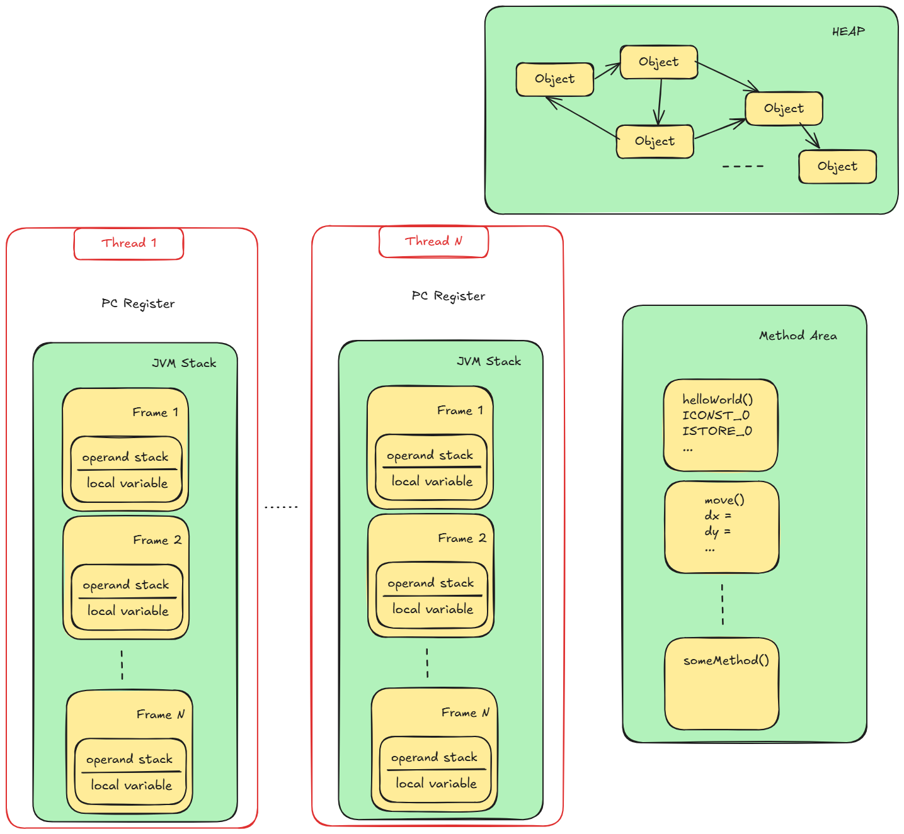

Основы компиляции языков Kotlin и Java
Цели создания виртуальной машины Java (JVM)
Виртуальная машина Java (JVM) была разработана компанией Sun Microsystems, а ключевую роль в ее создании сыграл Джеймс Гослинг. Позднее Sun Microsystems была приобретена компанией Oracle. Слоганом компании является Write once, run anywhere (WORA).
JVM, если кратко - это интерпретатор байт-кода Java. Главной особенностью JVM является возможность компиляции и запуска програм на, практически, любой платформе, не меняя при это код Java (сильно упращая жизнь разработчикам ПО).

JVM может быть установлена на любую операционную систему (Windows, macOS, Unix-like, и т.д.). Таким образом, позволяя написать код один раз, но работать он будет на нескольких операционных системах.
Архитектура взаимодействия Kotlin с JDK (Java Development Kit)
Виртуальная машина Java является некой прослойкой между программным кодом и операционной системой:

Компилятор языков программирования Java и Kotlin преобразует пользовательскую программу в, так называемый, байт-код. Данный байт-код уже понимает виртуальная машина Java (JVM) Ниже рассмотрим более подробно этапы компиляции и запуска приложения, написанного на языке Kotlin (Kotlin + JVM).
Кратко по каждому блоку:
Инструменты разработки
Java (JDT)- это набор расширений рабочей среды, с помощью которого можно редактировать, компилировать и запускать программы на Java.javac- компилятор языка Java. Преобразует*.javaв байт-код*.class;javap- дизассемблер языка Java. Применяет обратную опереациюjavac, преобразует*.classв понятный человеку формат;VisualVM- удобная утилита для визуализации, мониторинга, профилирования приложений Java;Other- набор доп. инструментов (Basic Tools, Security Tools, Monitoring and Troubleshooting Tools, Deployment Tools, etc.);
Kotlin Multiplatform- включает в себя компилятор для разны сред разработки (JVM, JS, Native);kotlinc- компилятор языка Kotlin. Преобразует*.ktвбайт-код, понятныйJVM.etc.
JRE (Java Runtime Environment)- среда выполнения Java. Необходима для запуска программ. Состоит из:Виртуальной машины Java (
JVM) - сердце работы программ;Стандартная библиотека классов Java (
java.io,java.lang,java.math,java.net, etc.).
Java Virtual Machine
Виртуальная машина Java состоит из трех основных компонет:
Загрузчик классов (
Class Loader);Область памяти JVM (
JVM Runtime Memory);Исполнительный механизм (
Execution Engine)

Class Loader
Но что на самом деле означает это JVM загружает? Спецификация Java SE приводит следующий комментарий:
Loading refers to the process of finding the binary form of a class or interface with a particular name, perhaps by computing it on the fly, but more typically by retrieving a binary representation previously computed from source code by a Java compiler, and constructing, from that binary form, a Class object to represent the class or interface.
Формулируя более простым языком, когда мы говорим о “загрузке класса”, мы имеем в виду:
Процесс поиска соответствующего файла
.classна диске, чтения его содержимого и передачи его в среду выполнения JVM, которая представляет собой определенную часть памяти машины, предназначенную для выполнения вашего приложения.
В действительности, система загрузчиков классов не просто находит классы — она обеспечивает целостность и безопасность Java-приложения, соблюдая правила бинарной структуры и пространства имен среды выполнения Java.
Загрузчик классов состоит из:
Загрузка (
Loading);Линковка (
Linking);Инициализация (
Initialization).
Загрузка
Процесс начинается с того, что загрузчик класса (далее, ClassLoader) получает задание найти определенный класс, что может быть инициировано самой JVM, или вызвано командой в вашем коде. Задача же здесь заключается в том, чтобы взять полное имя класса (например, java.lang.String) и получить соответствующий файл класса (например, String.class) из его местоположения на диске —> в память JVM.
Boostrap ClassLoader
Старейший представитель семейства, Bootstrap ClassLoader, отвечает за загрузку основных библиотек Java, расположенных в java.base модуле (java.lang, java.util и т.д.), необходимых для старта JVM.
Обратя внимания на диаграмму можно заметить, что другие загрузчики классов написаны на Java (объекты java.lang.ClassLoader), что означает — их также необходимо загрузить в JVM! Эту задачу также выполняет Bootstrap ClassLoader.
Platform ClassLoader
Документация Java SE 20 говорит о нем следующее:
The platform class loader is responsible for loading the platform classes. Platform classes include Java SE platform APIs, their implementation classes, and JDK-specific run-time classes that are defined by the platform class loader or its ancestors. The platform class loader can be used as the parent of a ClassLoader instance.
Но что отличает классы платформы от основных классов, загружаемых Bootstrap загрузчиком? Посмотрим, что он на самом деле загружает:
jshell> ClassLoader.getPlatformClassLoader().getDefinedPackages();
$1 ==> Package[0] { } // empty
Получается, что в пустой Java-программе — абсолютно ничего! Теперь попробуем явно использовать класс из какого-нибудь стандартного пакета:
jshell> java.sql.Connection.class.getClassLoader()
$2 ==> jdk.internal.loader.ClassLoaders$PlatformClassLoader@27fa135a
jshell> ClassLoader.getPlatformClassLoader().getDefinedPackages()
$3 ==> Package[1] { package java.sql }
Получается, проще говоря, Bootstrap загружает основные классы необходимые для запуска JVM, а Platform — публичные типы системных модулей, которые могут понадобиться.
Application\System ClassLoader
Application ClassLoader, также известный как системный загрузчик классов, пожалуй, самый user-friendly из всех. Именно этот загрузчик подгружает ваши собственные реализации и библиотеки зависимостей, которые вы передали JVM (явно или неявно) при старте приложения в качестве -classpath (-cp) параметра.
open class Human(){
fun move(){
// code
}
}
Линковка
Верификация (
Verification); проверка правильности файла.class, т. е. проверяет, правильно ли отформатирован и сгенерирован этот файл компилятором. Если проверка не удалась, мы получим исключение времени выполненияjava.lang.VerifyError. Это действие выполняется компонентомByteCodeVerifier. После завершения этого действия файл класса готов к компиляции.Подготовка (
Preparation);JVMвыделяет память для статических переменных класса и инициализирует память значениями по умолчанию.Разрешение (
Resolution). Это процесс замены символических ссылок типа прямыми ссылками. Это делается путем поиска в области метода, чтобы найти указанный объект.
Инициализация
В данном случае происходит инициализация полученного объекта.
Все эти этапы выполняются последовательно со следующими требованиями:
Класс должен быть полностью загружен прежде, чем слинкован.
Класс должен быть полностью проверен и подготовлен прежде, чем проинициализирован.
Ошибки разрешения ссылок происходят во время выполнения программы, даже если были обнаружены на этапе линковки.
JVM Runtime Memory

Method Area - В области Method area хранится скомпилированный код для каждой функции. Когда поток начинает выполнять функцию, в общем случае он получает инструкции из этой области.
Thread 1…N - Потоки строго выполняют предписанные им инструкции (
method area), для этого у них естьPC RegisterиJVM Stack.PC Register -
Program Counter Register— счетчик команд нашего потока. Хранит в себе адрес выполняемой инструкции.JVM Stack - Стек фреймов. Под каждую функцию выделяется фрейм, в рамках которого текущий поток работает с переменными и операндами.
Local Variables - Это массив локальных переменных (
local variable table), который, как следует из названия, хранит значения, тип и область видимости локальных переменных.Operand Stack - Operand stack хранит аргументы для инструкций JVM. Например, целочисленные значения для операции сложения, ссылки на объекты heap и т. п.
Heap - В рамках работы с фреймом мы оперируем ссылками на объекты, сами же объекты хранятся в
heap. Важное отличие в том, чтофрейм принадлежит только одному потоку, и локальные переменные «живут», пока жив фрейм (выполняется функция). Аheapдоступен и другим потокам, и живет до включения сборщика мусора.
Байт-код
Запустим Intellij Idea, создадим простой проект для демонстрации компиляции из *.kt в *.class.
В созданном проекте откроем файл /src/application.kt (создается по умолчанию, если не менять настройки). Добавим немного кода:
fun main(){ // Точка входа в программу
var number_01: Int = 10
var number_02: Int = 30
number_01 *= 2
number_02 += 20
println("Hello world!")
}
С помощью встроенных инструментов Intellij IDEA (Tools -> Kotlin -> Show Kotlin Bytecode) получаем дизассемблированный байткод.
public final class ApplicationKt {
// compiled from: application.kt
@Lkotlin/Metadata;(mv={2, 2, 0}, k=2, xi=48, d1={"\u0000\u0008\n\u0000\n\u0002\u0010\u0002\n\u0000\u001a\u0006\u0010\u0000\u001a\u00020\u0001\u00a8\u0006\u0002"}, d2={"main", "", "HelloKotlin"})
// access flags 0x19
public final static main()V
L0
LINENUMBER 3 L0
BIPUSH 10
ISTORE 0
L1
LINENUMBER 4 L1
BIPUSH 30
ISTORE 1
L2
LINENUMBER 6 L2
ILOAD 0
ICONST_2
IMUL
ISTORE 0
L3
LINENUMBER 7 L3
IINC 1 20
L4
LINENUMBER 9 L4
LDC "Hello world!"
GETSTATIC java/lang/System.out : Ljava/io/PrintStream;
SWAP
INVOKEVIRTUAL java/io/PrintStream.println (Ljava/lang/Object;)V
L5
LINENUMBER 11 L5
RETURN
L6
LOCALVARIABLE number_01 I L1 L6 0
LOCALVARIABLE number_02 I L2 L6 1
MAXSTACK = 2
MAXLOCALS = 2
}
На данный момент не очень понятны команды BIPUSH, ISTORE, ILOAD и т.д.
Для этого необходимо немного погрузиться в кухню Java Virtual Machine.